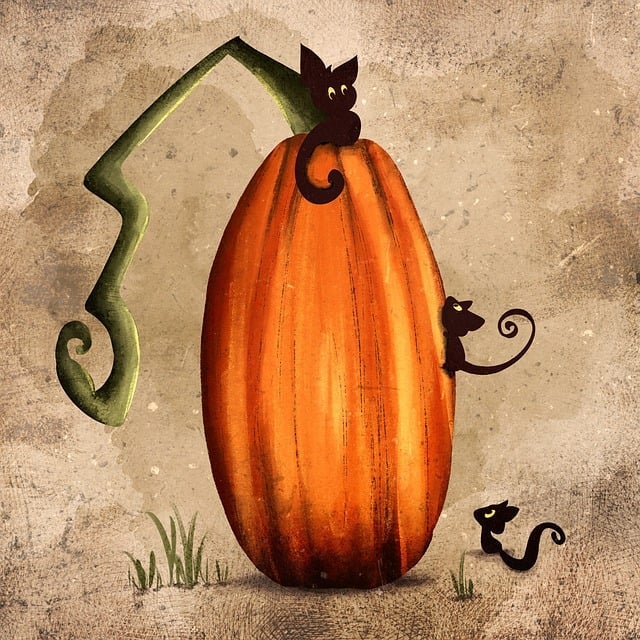
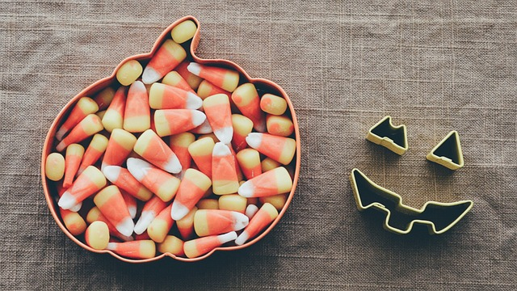

Party Time People
Costume Time!
Halloween is the best time of year because you can really turn into who ever or what ever you want. Except as a trafic cone because that is what I am dressing up as. So it is off limits. Besides that, halloween is the perfect time to be creative! You get to turn into what ever character you want. A theatre kids true dream: to be ridiculous in public with as little judgement possible. Get creative! This is my favorite part of halloween and I can not wait to see what people come up with. Don't worry about spending a lot of money either. Homemade costumes are encouraged! Ever wanted to learn to sew? Perfect! Sew on patches for your costume. Want to learn to do sfx makeup? Why not! Perfect time to make people scream.
Trick or Treating
Candy is definitely the second best part of halloween. Going out and trick or treating is always such a blast. There is a multitude of different houses you may find. There are a few main ones. The first and most common is the classic. You go to the door or people sitting on their driveway, they hold out the bowl and either give you a handful or you get to grab some. It's wonderful, exactly what you think of when you think of trick or treating. Next is a favorite of most, the king size house. There is one in every neighborhood. The one house that only gives out king size candy bars. All the teenagers know the exact path. 9 out of 10 times its also the rich house of the neighborhood. Although the king size house is wonderful, my personal favorite is the apple cider house. I know exactly where it is in my neighborhood as its the house behind mine. Every year they serve fresh popcorn, candy, and switch yearly between apple cider and hot coco. They do their best to give some to everyone and will even wait till later in the night to hand out seconds. This isn't always the most decorated house but it can be. Candy and decore don't seem to have a link for trick or treating. For this party we will be starting trick or treating at 6pm and following a route throughout the neighborhood, starting and ending at the apple cider house.